How each of my projects works: how to start it, how to use it, what happens inside, and what it can’t do yet. Every page takes on the look of its project.
Most of what I make runs in a browser, on your own device. There is no account and no server of mine, and your files stay where they are. These pages explain each project in the same order: run it, use it, how it works, limits, credits.
Published or not
Each page says where the project stands.
Status
What it means
Available online
There is a live version you can open, and its source is on GitHub. Nearly every project is. Desktop and terminal tools link to a project page with setup steps.
Not published yet
The project works on my computer but isn’t public yet. Its page still explains how to run it once it is.
Four ways a project starts
You can tell which kind a project is from the “Run it” part of its page.
One HTML fileDouble-click index.html. The Realistic and 8-Bit Vinyl Players, Spot’s Biscuit Snake and Spot-light work straight from disk, even offline.
A web app that needs a serverBrowsers won’t run modules, workers or WebAssembly from a file:// address. These ship a start.command, or use any static server.
An app with a helperTabShell, LiquidFrame, web2app and Retrofind run a small server on your own computer, on 127.0.0.1 only. start.command starts it and opens the page.
A program you install or buildTerminal tools and desktop apps don’t run from a web page. Skyhold, needle, textarea-cli and USB LLMS need Go, Glyphium needs Rust and Zig, QuickTalk needs Rust and Node, Archium needs Node, and LvW-harness needs Bun. Their pages list the steps, and “Project page” on their cards links to the same steps.
To serve a folder yourself, run this inside it and open the address it prints:
python3 -m http.server 8000
If a page opened by double-click looks empty or broken, it is almost always this. Use start.command, or the command above, and open the http://localhost address instead.
Using start.command on a Mac
Double-click it in Finder. It installs or builds what is missing, starts the server and opens your browser. Close its Terminal window to stop it. If macOS says it can’t open a file downloaded from the internet, right-click it, choose Open and confirm once.
Browsers
Everything is tested in Chromium. Most projects also run in Firefox and Safari; each page says when one doesn’t.
OpenFinder needs the File System Access API to open a folder, and iPod.js and PhotoCraft use it to remember a folder or save back to a file. Brave ships with it switched off: turn on brave://flags/#file-system-access-api and relaunch.
The AI tools in GlassPaint, PhotoCraft and Convert use your graphics card through WebGPU where the browser has it. A few need it: upscaling in Convert, AI plays in Spot’s Biscuit Snake and the large Whisper model in Textarea. Ask Clippy in Paint97 falls back to the processor without it.
Licences and forks
Most of my own projects are MIT licensed. Videoina and Hillium are GPL-3.0, OpenFinder and web2app GPL-3.0 or later, to fit what they build on or will use: mpv, Helium, FFmpeg and Pake. Nine projects are forks: I took an open-source project I liked and kept adding to it. Their pages say whose work they start from and list what my edition adds.
Ultra-Realistic Vinyl Player
A Thorens TD 115 MK II in your browser: every part modelled in 3D from photographs, with a physically modelled motor, tonearm and playback chain.
Players
MIT licence
Available online
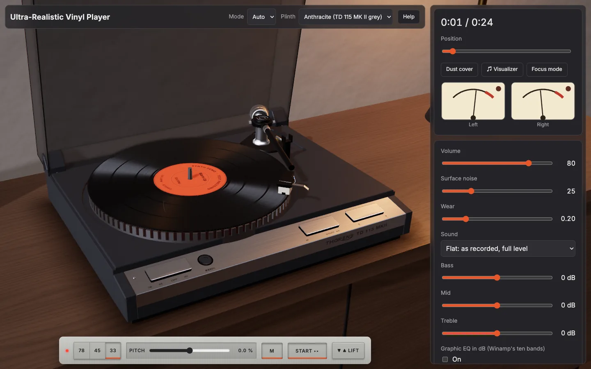
Run it
Open the live version, or run it yourself with Node 22.12 or newer:
npm ci
npm run dev
Open http://localhost:5173/, press Add files, then Start, or drag the headshell onto the record. Adding ?demo to the address plays three synthesized tracks without touching your library. npm start builds and serves the production version. Opening index.html by double-click doesn’t work, and the page says so.
Use it
The speed plate reads 78 45 OFF 33, as on the real deck, and 78 stays locked until you press the pin beside it. Pitch is ±6 %, or ±8 % as an option.
Strobe slots in the rim stand still under the neon lamp at exact speed, for 50 or 60 Hz mains.
Your whole queue is laid on one record, with bands by length and loudness, gaps, a lead-in, a run-out and a locked groove. Sides of about 22 minutes turn over in 3D.
Put a hand on the record to scratch it, forwards or backwards.
Surface noise goes from Mint to Beat-up, and scratches tick exactly as their drawn mark passes the stylus.
There is a Winamp ten-band EQ with 17 presets and .eqf import, a visualizer on the label, six finishes, and daylight and dusk lighting.
The library keeps files in the browser, with tags, cover art and liner notes. It installs as an offline app.
How it works
The sourceA decoded file, or a streaming <audio> element for big files
The workletRIAA stage, wow and flutter, scratch ticks and pops. It also holds the record’s true angle
Tone and EQBass, mid, treble and the ten graphic bands, with a trim so nothing clips
The cut chainMono bass, crosstalk, roll-off and saturation, which you can bypass
The outputSurface noise joins after the worklet, then volume and your speakers
The drawn record locks to the worklet’s angle, so what you see and hear stay together. The maths for RIAA, the motor, the strobe and the arm lives in modules without DOM or Web Audio code, and is unit-tested. A check keeps 18 features of the model within 2 % of the plinth width against the reference photograph.
Limits
Scratching needs the file decoded in memory, so it is off for files over 150 MiB or 20 minutes, which play in streaming mode.
Very slow or very fast hand movement sounds rougher than real vinyl.
The sub-chassis springs, motor and belt aren’t modelled, because the platter doesn’t lift and nothing below it is ever seen.
The 3D deck needs WebGL 2. Without it, a 2D deck with every control takes over.
No real phone has been tested. Phone layouts are checked by emulation.
Credits
MIT licence, with third-party notices in the repository’s NOTICE. Thorens is a trademark of its owner, and this project isn’t affiliated with it. The deck’s name and wordmark appear on the model because this is a study of that object. Source: Gitguy268/ultra-realistic-vinyl-player.
Four Stem Player
An unofficial browser replica of both generations of the four-stem hardware music player, in real-time 3D. It splits any song into stems on your own machine.
Players
MIT licence
Available online
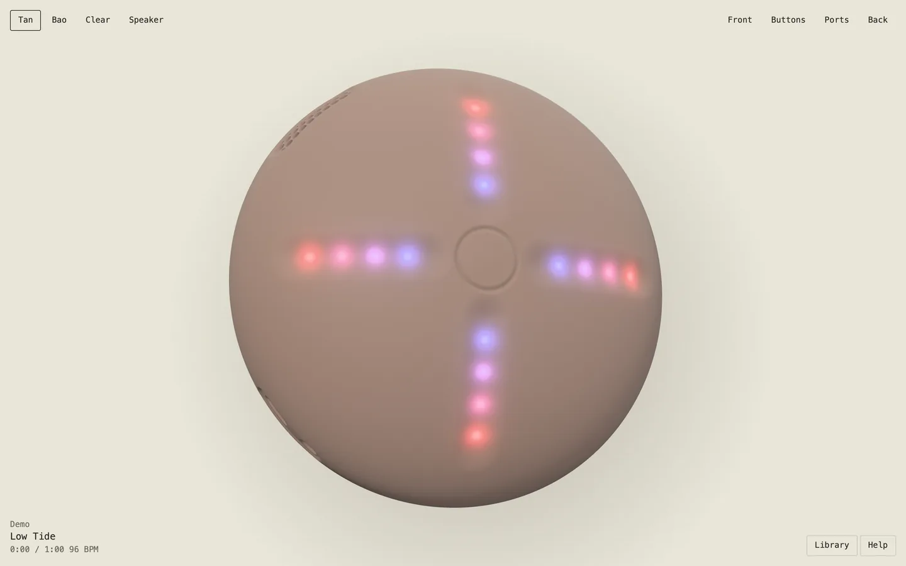
Run it
Open the live version, or run it yourself with Node 22.12 or newer. On a Mac, double-click start.command. Elsewhere:
npm ci
npm start # http://localhost:8791
Opening index.html by double-click can’t work, because browsers block the audio workers on local files. The page tells you this.
Use it
Handheld (v1)
Speaker (v2)
Controls
4 grooves with 16 lights, centre button, edge buttons
5 touch points, edge buttons, port panel
Mix
Slide or isolate each stem
Isolate, or swap a stem in from another song
Loops
¼ to 16 bars, locked or instant
¼ to 2 beats, slip or standard
Speed
50 to 125 %, forward and reverse
Speed and pitch set separately, plus a scratch
Extras
8 effects, 60 s recordings, 4 slots
Staged transitions, minimal mode, storage mode
Drag the surface to turn the device, and press L for the library. You can add music by splitting any audio file, by importing four stem files, or with demo tracks that are synthesised when first played. The Help button lists each device’s full controls.
How it works
SpecEvery number and mapping for both devices
ControllersPure state machines, with no audio or graphics in them
EngineWeb Audio: two decks of four stems on one clock, plus effects, pitch and a recorder
SceneProcedural geometry and LED shading, with no model files or product images
SeparationDemucs in a worker through WebGPU, with the model cached in your browser
Your music never leaves your computer. The first split downloads a model of about 172 MB.
Limits
Some details are best guesses, including the names of the 8 handheld effects. The repository’s docs/PARITY.md lists each one.
Song links, streaming and online sessions are left out, since they need a backend.
Splitting without WebGPU falls back to the processor, which is slower. On an Apple silicon Mac, 12 s of audio took 5 to 7 s on the graphics card and about 25 s on one processor thread.
WebKit’s private file storage wasn’t available in testing, so songs may last only for the session there.
A stem pack of 4 minutes takes around 340 MB of memory while playing, and double in reverse.
Credits
MIT licence. Not affiliated with or endorsed by the makers of the original devices, and no logos, product media or commercial music are in the repository. The separation model is downloaded at run time from a repository that states no licence, so it falls outside this project’s licence. Source: Gitguy268/stem-player.
Realistic Vinyl Player
A turntable in one HTML file. It plays your own audio files and tries to look, move and sound like a real deck.
Players
MIT licence
Available online
Run it
Open index.html in a browser. There is no build step and nothing to install, and it makes no network requests, so it works offline and from file://.
Add ?demo to the address to load three short synthesised tracks, so you can try it without files of your own. Demo tracks stay in memory and never touch your saved library.
Use it
Drag audio files onto the page, or a cover image. Then press play, or drag the tonearm onto the record yourself.
Control
What it does
⏻
Motor on or off. With the stylus down, the music winds up or down with the platter.
⏮ ▶ ⏭, 🔀 🔁
Previous, play or pause, next; shuffle; repeat off, one or all
33⅓ / 45 / 78
Platter speed. The pitch follows it.
Tonearm
Drag it and drop it on a groove to play from there, on a gap for the next track, or off the record to park it.
Hand on the record
Scrub. With Scratch on you hear the track forwards and backwards under your hand.
Pitch
±8%. Double-click to reset.
Condition
Mint, Good, Worn or Beat-up: hiss, crackle, scratches, dust and treble loss.
Theme
Minimal, Wood or Clear, in light or dark, or your own colours.
Deck settings
Wow and flutter, auto-return, record sides of about 22 minutes, record size following speed.
Side A ⇄
Flips the record when Record sides is on and the playlist needs more than one side
Focus
A larger deck with a floating control bar
♫ Visualizer
Off, MilkDrop or spectrum bars on the record label, upright as the record turns
Keys: Space plays or pauses, ←→ skip 5 s, ↑↓ set the volume, S shuffles, R cycles repeat, F and Esc enter and leave focus mode. Media keys work too.
How it works
Your filesDecoded into memory, two tracks at a time
The recordEach track becomes a groove band sized by its length
Platter physicsSpin-up, coast-down, wow and flutter set the playback rate
Platter speed is exact: 33⅓ rpm is 200° per second. The motor takes about 1.4 s to reach speed and the platter coasts for about 3 s.
The tonearm is a pivoted arm. Its angle comes from the pivot geometry, so the stylus traces the arc a real arm would.
Surface noise is generated, not looped. Each record has its own scratches, which tick once per turn where they are drawn.
The strobe marks on the platter stand still at the right speed and drift when the pitch is off. All textures are generated; there are no image files.
Limits
Formats the browser can’t decode into memory play through a plain media element: they follow the pitch but scrub silently and can’t play backwards.
A decoded track takes about 0.18 MB of memory per second of stereo audio.
Playing on with a locked phone screen hasn’t been confirmed on a real phone yet.
Credits
A remake of my earlier Vinyl Player, with new materials, physics and sound. The MilkDrop visualiser is butterchurn by Jordan Berg (MIT). The bars visualiser follows Musializer by Alexey Kutepov (MIT).
8-Bit Vinyl Player
A pixel-art turntable in one HTML file. It plays your own audio files in the colours of an NES, a Game Boy or a C64.
Players
MIT licence
Available online
Run it
Open index.html. Like the Realistic Vinyl Player it needs no build, makes no network requests and works from file://. ?demo loads three synthesised tracks.
Use it
Control
What it does
PWR
Motor on or off
<< PLAY >>
Previous, play or pause, next
33 / 45 / 78
Platter speed
Palette
NES, Game Boy or C64, each with a light and a dark page
Crush
8-bit sound: from 8 bits at 22 kHz down to 4 bits at 5.5 kHz. Zero leaves the signal untouched.
FOCUS
A larger deck with a floating control bar
VIZ
Off, MilkDrop, or spectrum bars on the record label
How it works
Same deckThe physics and sound chain of the Realistic Vinyl Player
Deck pixelsAn 84-pixel platter. Each deck pixel is 4 screen pixels on a desktop, 6 in focus mode and 3 on a phone
Five coloursFour shades and one accent per palette
The record is never a rotated picture. Its grooves are rings, which look the same at every angle, so they stay put. Only the cover, the label print, scratches and dust move, to one of 64 angles per turn, so no pixel is ever drawn tilted. Mechanical sounds are square waves, triangle waves and noise, like the channels of a sound chip.
Credits
Text is set in Press Start 2P (SIL Open Font License), embedded in the file. Visualisers as in the Realistic Vinyl Player.
iPod
iPod.js (local files)
The iPod Classic, playing the music on your own computer. Point it at a folder and browse it with the click wheel.
Players
Fork
MIT licence
Available online
Run it
You need Node.js and pnpm. From a copy of the repository:
pnpm install
pnpm dev # then open http://localhost:3000/ipod
pnpm build writes a static site to out/, meant to be served from the /ipod path. It has to be served from https:// or localhost; it doesn’t work opened as a file.
Use it
Choose a folder from the iPod’s menu, the button at the top of the page, or by dragging it onto the window. Every audio file in it and its subfolders is added: mp3, m4a, aac, flac, wav, ogg, opus, aiff.
Artist, album and track come from the tags. Untagged files fall back to Artist/Album/01 Title.mp3 folder names. Artwork comes from the files, or from a cover, folder, front or album image beside them.
.m3u and .m3u8 playlists in the folder appear under Playlists. Hold the centre button on a song for Play Next and Play Later.
Media keys and the system’s now-playing panel control playback, and a reload puts back the song you were on.
Albums have their own pages, and you can search the library or browse it by genre.
Three display modes: Compact, which can pop out into a small window that stays on top, Full and Massive. The MilkDrop and Bars visualisers play along on the screen.
Browser
Folder access
Chrome, Edge
The folder is remembered. Later visits need one click to allow it again.
Safari, Firefox, Brave
Choose or drag the folder in on each visit. The browser calls it an “upload”, but nothing leaves the computer.
How it works
Your folderRead in the browser with the File System Access API
Tags and artmusic-metadata reads them; results are cached so only new files are read again
The iPodThe original interface, now browsing your library
Credits
Fork of tvillarete/ipod-classic-js by Tanner Villarete (MIT), with the Apple Music and Spotify integrations replaced by a local library. iPod is a trademark of Apple; this fan-made tribute is not affiliated with Apple.
audiocheck
Checks whether a music file is as good as it claims: an MP3 dressed up as FLAC, or a hi-res file that is upsampled CD audio. No file leaves your device.
Players
MIT licence
Available online
Run it
Needs Node 24 or newer. From a copy of the repository:
npm ci
npm run dev # http://localhost:5173
npm run build makes a static bundle in dist/ that works from any path.
Use it
Drop files or a whole folder on the page, or use Choose files or Choose folder. Click a file name to see its spectrogram and findings. It analyses what your browser can decode: FLAC, WAV and MP3 are covered by the tests, other formats depend on the browser. For files it can’t decode, such as ALAC in Chromium, APE, WavPack or DSD, it still shows what the header says.
Verdict
Meaning
No problems found
Nothing tripped. This isn’t proof of a lossless source.
Suspicious source
A lossless file with an encoder-style cutoff below 19.5 kHz
Possibly lossy
A sharp cutoff between 19.5 and 21 kHz
Fake hi-res
Upsampled, or 16-bit audio padded to 24 bits
Clipping
Five or more flat tops
Peaks over full scale
The true peak goes above 0 dBTP
Damaged
Cut short, samples missing, checksum mismatch, or it won’t decode
How it works
DecodeThe browser decodes at the file’s own sample rate, so nothing is resampled
Spectrum8192-sample FFT frames, averaged into 50 Hz bands
Find the edgeA drop of 20 dB with nothing above it marks a lossy encoder
VerdictWorded as evidence, beside the numbers and the spectrogram
The cutoff is matched against LAME’s low-pass per bitrate (128 kbps cuts at 17 kHz, 320 at 20.5 kHz), so the bitrate it names is an indication.
Bit depth: every sample is turned back into an integer and all of them are OR-ed together. Low bits that stay zero were never used.
For FLAC, the MD5 of the decoded samples is compared with the one stored in the file. A self-test at startup checks that the browser returns exact samples first.
Loudness, loudness range and true peak follow ITU-R BS.1770, through loudness-worklet.
Limits
A clean result is not proof: MP3 at LAME’s V0 preset has no low-pass, so there is no edge to find.
Thresholds were set on generated noise. Quiet or treble-poor music can be misjudged, which is why the spectrogram is always shown.
Brave scales decoded audio by a tiny random factor, so the bit-depth and checksum checks are skipped there.
A file is decoded fully into memory: about 20 MB per minute of CD-quality stereo.
Tested in Chromium and Brave. Firefox and Safari haven’t been tried yet.
Credits
Built on music-metadata, fft.js, loudness-worklet and @noble/hashes (all MIT). The cutoff search follows the method of fakeflac by Maurits van der Schee.
Videoina
An IINA-style video player for Windows and Linux. It plays what mpv plays, with IINA’s shortcuts, under controls of liquid glass that bend the video behind them.
Players
GPL-3.0 licence
Available online
Run it
System
File
How to run
Windows 10/11 (x64)
Videoina-win64.zip
Unzip and run videoina.exe. It is unsigned, so SmartScreen may ask you to confirm.
Linux (x86_64)
Videoina-x86_64.AppImage
chmod +x it and run it
The builds will be on the GitHub releases page once the repository is public. To build it yourself you need CMake 3.21+, Qt 6.5 or newer and libmpv:
On macOS it builds for development only; Mac users should use IINA itself.
Use it
Drop files on the window or press Ctrl+O. Several files make a playlist. Controls and the cursor hide after 2.5 seconds without mouse movement. Double-click toggles full screen and the scroll wheel sets the volume. The playlist sidebar jumps to any file, and the subtitle and audio menus list every track with its language and codec.
Key
Action
Space
Play or pause
← / →
Seek 5 s
↑ / ↓
Volume ±5
f, Enter / Esc
Full screen toggle, on, off
Ctrl+← / Ctrl+→
Previous or next in the playlist
. / ,
One frame forward or back
Ctrl+[ / Ctrl+]
Half or double speed
v
Show or hide subtitles
Shift+Z / Shift+X
Subtitle delay −/+ 0.5 s
Ctrl+Shift+S / Ctrl+Shift+A
Next subtitle or audio track
Ctrl+s
Screenshot
These are IINA’s default bindings with ⌘ mapped to Ctrl. The full list is in config/input.conf.
How it works
libmpvDecodes and renders each frame through its OpenGL render API
Qt Quick sceneThe frame lands in Qt’s scene graph, not a separate window
Glass shaderEach panel captures what is behind it, blurs and bends it at the edge
Because the video is part of the scene, the glass reacts to it frame by frame. Key presses go to mpv as keypress commands, so input.conf decides what they do. CI builds on Windows and Linux, plays a generated test video in each build and keeps a screenshot.
Limits
No plugins, picture-in-picture, online video or seek-bar thumbnails yet.
Hardware decoding and HDR haven’t been tested on real Windows or Linux hardware. CI tests every build headlessly with software OpenGL.
x86_64 only, and the builds are not code-signed.
Credits
A separate project inspired by IINA, sharing only its key-binding file, and not affiliated with IINA or Apple. Playback is mpv, the interface is Qt.
BlackLabSpotsShop
A shop site for T-shirts and hoodies with Spot on them.
git clone https://github.com/Gitguy268/BlackLabSpotsShop.git
cd BlackLabSpotsShop
npm install
npm run dev
Use it
Browse product cards, then open Quick View for sizes and details.
Save favourites to the wishlist; the count shows how many you have.
Minecraft mode switches the whole look.
How it works
React and ViteTypeScript, Tailwind CSS and shadcn-ui
ContextsWishlist and Minecraft mode, memoised
Scroll hooksProgress bar, back to top and the floating Shop button, throttled
A particle background sits behind the products. The wishlist is kept in localStorage.
Black Lab Spots storefront
A custom storefront for Black Lab Spots: the existing catalogue and Printify fulfilment, a Stripe checkout, and a fast Next.js site in warm paper and black type.
Spot
MIT licence
Available online
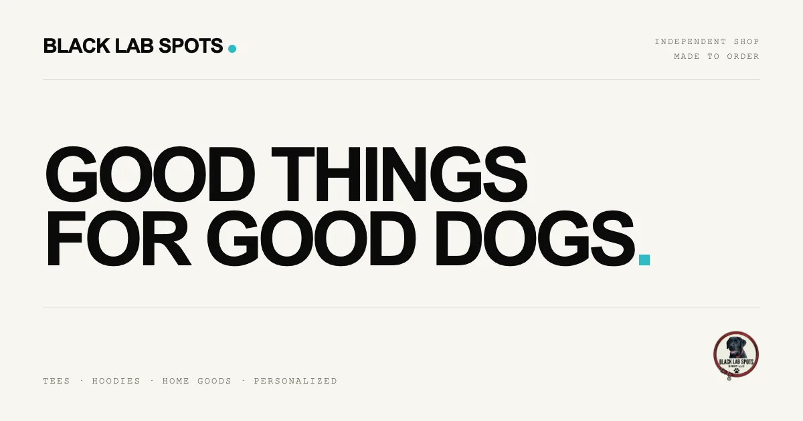
Run it
There is no public shop at this address. To try it, install Node 22 or newer and pnpm, then:
pnpm install
cp .env.example .env.local
pnpm dev
Open http://localhost:3000/. Without Stripe keys the checkout validates the bag and shows a confirmation, but charges nobody. Without Printify keys, paid orders are logged and not forwarded.
Use it
Browse the full catalogue with search and sorting, or by collection: apparel, home, accessories and personalized.
Every current product accepts a free-text personalization request, shown in the cart, the order summary and the Stripe line item.
Checkout collects a shipping address and charges a flat $6.95, free over $75.
pnpm catalog:scrape and pnpm catalog:sync refresh data/catalog.json from the public store and Printify.
How it works
Next.jsApp Router pages for the shop, products, cart and checkout
Stripe CheckoutThe server validates prices and creates the session
WebhookA paid order creates a Printify order and an optional confirmation email
PrintifyOrders start as drafts for review, until you turn on sending to production
Limits
It isn’t live. The repository’s checklist still lists a test purchase, tax handling, shipping rates and a legal review.
Stripe Tax isn’t turned on.
A failed Printify call is logged, not retried. A durable queue is still to be added.
The flat shipping rate applies to every allowed country.
Credits
MIT licence for the code. Product photography and product names belong to Black Lab Spots. The design is inspired by minimal direct-to-consumer shops and uses no code, copy or assets from them. Source: Gitguy268/blacklabspots-storefront.
Blacklabspots grid shop
A separate, buildless storefront inspired by a minimal product grid, with all 35 Black Lab Spots products as seen on 22 October 2026.
Spot
MIT licence
Available online
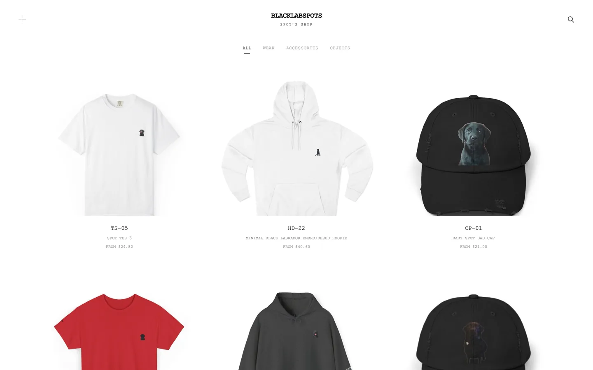
Run it
Open the live version, or serve the dist folder yourself:
python3 -m http.server 8000 --directory dist
Use it
Filter by category, search, and open a product in a dialog.
To edit it, change dist/products.json for names, prices and links, dist/style.css for the layout, and dist/app.js for the behaviour.
How it works
It is static HTML, CSS and JavaScript with no build step. Product images are bundled locally, and there is no tracking or backend. The layout is an independent implementation of patterns visible on the public page that inspired it.
Limits
The catalogue and prices are a snapshot, not live inventory.
There is no cart or payment. Options, availability and purchases stay on the original store.
Credits
MIT licence for the code. Products and photographs belong to Black Lab Spots. It contains none of the source, imagery, branding or backend of the Yeezy site it takes its look from, and isn’t affiliated with it. Source: Gitguy268/blacklab-store-yeezy.
Paint97_□×
Paint97
A Windows 9x desktop in the browser, built around an Excalidraw whiteboard, with a Start menu, Notepad, Minesweeper, Calculator and Clippy.
Editors
MIT licence
Available online
Run it
Needs Node 20.19 or newer, and git the first time. From a copy of the repository:
npm ci
npm run dev # http://localhost:7891
The first run fetches JS Paint at a pinned commit into public/jspaint/ (about 13 MB). npm run build makes a static, installable site that reloads offline.
What’s on the desktop
App
What it does
Paint97
Excalidraw behind a Win98 tool strip and 28-colour palette. Save .excalidraw, export PNG or SVG, copy a share link that carries the whole drawing, or send it to another device on the same Wi-Fi.
JS Paint
Isaiah Odhner’s remake of MS Paint, for pixels, served from this site and working offline
My Drawings
Folders, rename, move, a Recycle Bin, undo, and previous versions of each drawing
Notepad, Calculator, Minesweeper, Clock
Small apps, each in its own window
PC Emulator
An x86 PC on v86 that boots FreeDOS, or a disk image of your own
Control Panel
Wallpaper, volume, Liquid Glass, English or Dutch, Clippy’s personality and size, reduced motion, and one JSON backup of all local data
Ask Clippy
Chat with MiniCPM-V 4.7 1B, on your graphics card or else the processor. Tick Look at my drawing and Clippy sees the canvas. Diagram turns a description such as “login flow” into a Mermaid diagram that lands on the canvas as shapes. Nothing is drawn until you press Apply.
Windows drag, resize, snap, minimise and maximise. Alt+Tab (or Alt+`) switches windows and the Win key opens Start.
How it works
App registryOne table drives icons, the Start menu, taskbar and windows
Window managerOne store for every window, its layout restored on reload
Local storageBrowserFS and IndexedDB hold drawings and notes
Clippy is meant to look like 1998, so his engine holds “choppy rules” as constants: 8 to 12 frames per second, no tweens or CSS transitions, integer pixel scale, five teleport jumps to move. Clippy’s model runs through a bundled build of wllama. It downloads from Hugging Face at a pinned revision in 64 MiB pieces, each checked against its SHA-256 before it is cached, so a download can be paused and resumed. Send to a device connects two tabs directly over WebRTC with no server between them, paired by scanning QR codes, and the receiver accepts before anything is sent.
Limits
Ask Clippy downloads a 1573 MB model from Hugging Face once. Without WebGPU it runs on the processor, which is much slower.
Send to a device works only between devices on the same network, and hasn’t been tried on a real phone yet.
Credits
Excalidraw (MIT), JS Paint by Isaiah Odhner (MIT), v86 (BSD-2-Clause), wllama (MIT), MiniCPM-V 4.7 by OpenBMB (Apache-2.0). Clippy’s artwork, animations and sounds belong to Microsoft and aren’t covered by the MIT licence; this project isn’t affiliated with Microsoft.
GlassPaint
miniPaint with a glass interface, and tools that run a model on your own device: background removal, object selection and upscaling.
Editors
Fork
MIT licence
Available online
Run it
npm install
npm run server # development server, opens the browser
npm run build # production build in dist/
What my edition adds
Where
What
AI › Remove Background
U-2-Netp (5 MB) or IS-Net (179 MB), with feather and decontaminate sliders. Gives a cut-out and a mask layer as one undo step.
AI › Select Object
Click an object to get its mask with SlimSAM. Shift+click adds a point, Alt+click excludes one.
AI › Upscale 2x
Swin2SR, in tiles. Up to 1280 px with WebGPU, 768 px with WebAssembly.
Open a PSD
Each layer with pixels becomes a layer with its name, position, opacity and blend mode
Image › White Balance
Automatic, from a picked neutral colour, or by hand
History panel
Every undoable step; click one to jump to it
Tool settings are remembered between visits. The auto theme follows your system’s light or dark setting.
How it works
First useTransformers.js loads, then the model downloads once from Hugging Face
Cache StorageThe model is kept, so later runs need no network
WebGPURuns on the graphics card, or WebAssembly on the processor
The glass is all in src/css/glass.css, driven by CSS variables, with SVG displacement-map refraction on the toolbar and dialog rims in Chromium. Firefox and Safari get plain blur. Reduced transparency gives opaque panels.
Credits
Fork of viliusle/miniPaint (MIT). Every model’s source, licence and size is listed in MODELS.md; all are Apache-2.0.
PhotoCraft, my edition
PhotoCraft is an open-source image editor written in Rust, with layers, masks and real PSD files. This is its web version with my additions; the PhotoCraft team doesn’t publish or endorse it.
Editors
Fork
MIT licence
Available online
Run it
Double-click start.command: it builds the web version if needed, serves it on port 8780 and opens the browser. By hand, with Rust’s wasm32 target and trunk installed:
The default, dark and light. Panels show a blurred view of your image. Reduce transparency in Preferences › Interface.
Remove Background
Layer menu, Properties, the task bar or the command palette. The app asks before downloading the 4.4 MB model.
AI Upscale 2x / 4x
Filter › AI › AI Upscale, with Real-ESRGAN
AI Denoise
Filter › AI › AI Denoise, with SCUNet
Object Selection by clicking
With MobileSAM installed; ⇧ adds, ⌥ subtracts
Remove tool
With LaMa installed, fills what you paint over
Plain-language commands
Edit › Search (⌘F): “blur 5” or “make it brighter”, in English or Dutch
Autosave
Unsaved documents survive a crash or reload
Save back to the file
Where the browser has the File System Access API
Contextual Task Bar
Under the canvas: Remove Background, Select Subject, AI Upscale and AI Denoise. Window › Contextual Task Bar hides it.
AI model manager
Filter › AI › AI Models installs and removes the models
On 17 October 2026 the fork merged upstream 0.9.0. That brought in, among much else, playing Photoshop action sets (.atn), Krita (.kra) import, CMYK TIFF and JPEG export, and the Pro Light and Soft Dark and Light themes beside Liquid Glass.
How it works
Rust engineThe same editor as the desktop app
WebAssemblyCompiled with trunk to run in the browser
Local modelsDownloaded only after you agree, then run on your device
IndexedDBKeeps autosaves; a service worker makes it work offline
Limits
The AI tools are slow on large images in the browser: LaMa takes 10 to 25 seconds per stroke and about 2 GB of memory. Without a model, each tool falls back to the built-in method.
Credits
Fork of storytold/photocraft, which is MIT OR Apache-2.0; this edition takes the MIT option. I keep it up to date with upstream by merging.
Pikado
A raster and vector image editor in the spirit of Photopea. My fork gives the menus and dialogs a glass look.
Editors
Fork
MIT licence
Available online
Run it
npm install
npm run dev # http://localhost:5173
npm run build # production bundle in dist/
Or with Docker, which serves the bundle from nginx:
Plain ES modulesNo framework and no TypeScript; Vite bundles them
One dependencyThe HEIC decoder, downloaded only when you open a HEIC
GlassThe design tokens of LiquidGlass-UI, as one CSS file
Three things reach the network, and only these: Generative Fill (off until you supply your own API key, and it asks first), Google web fonts when you use one, and an image you drag in from another tab.
Credits
Fork of koneb71/pikado by Neiell Care L. Paradiang (MIT). Its CHANGELOG lists everything the fork changes.
Textarea
A minimalist text editor. Notes live in the URL, in your own document library, or in a file you export.
Editors
Fork
MIT licence
Not published yet
Run it
There is no build step. Double-click start.command, which serves it and opens the browser, or serve the folder with any static server. It installs as an app and works offline.
Use it
Where a note lives
In the URL: the text is compressed with deflate into the address, so copying the URL shares the note.
In My documents, a searchable library in this browser, with pins, tags, a trash that keeps notes for 30 days, and an activity calendar.
In a folder you pick, mirrored both ways as Markdown files.
Behind a password, as an encrypted link (AES-256-GCM).
Writing
Find and replace with Ctrl/⌘+F; a quick switcher on Ctrl/⌘+K.
[[Link]] to another note by title, with backlinks; - [ ] becomes a checkbox; #tag is counted and filterable.
Writing tools (improve, shorten, summarise, fix, make casual) and speech to text with Whisper, both on models that run on your machine.
Every action in one filterable list on Ctrl/⌘+Shift+P, once the command palette is switched on in Settings.
Models
Model
Size
For
Gemma 3 270M
253 MB
Quick rewrites; the default
MiniCPM5 2B
1.56 GB
The best writing of the three
MiniCPM-V 4.7 1B
1.57 GB
Reads pictures: adds Describe image and Read text from image
Whisper small
249 MB
Speech to text, runs everywhere
Whisper large v3 turbo
1.65 GB
More accurate speech to text, on the graphics card
In and out
Open text, ZIP and PDF files. Save as text, Markdown, HTML, JSON, CSV, XML, RTF, LaTeX or YAML. Export to a QR code, a ZIP, or straight to another device on the same Wi-Fi: Send to a device pairs the two by QR code and connects them over WebRTC with no server between them.
How it works
You typeIn one textarea, highlighted as Markdown
DeflateThe text is compressed into the URL hash
LibraryEach note is also kept in browser storage, and in your folder if you chose one
Nothing is uploaded and there is no account or server. The models ship with the app in checksum-verified pieces and are cached after the first use, so they work offline.
A photo and video library in the style of Photos. Your pictures, reversible edits, AI tools and catalogue all stay on your computer.
Editors
MIT licence
Development preview 0.2
Available online
Run it
You need 64-bit Python 3.11 or newer and Node.js 22 for the first build. Set it up once, then start it with the launcher for your system:
python3 scripts/setup.py
./start.command # macOS; start.cmd on Windows, ./start.sh on Linux
It opens at http://127.0.0.1:4320. Optional tools add more formats: FFmpeg, Tesseract, ExifTool, ImageMagick 7, and darktable for RAW files.
Use it
Connect a folder or paste its path. Subfolders are indexed and originals stay where they are.
Click selects, double-click or Enter opens the viewer, and Edit opens the editor.
Browse by Years, Months or All Photos; rate, flag, favourite, add keywords, make albums and smart albums.
Edits are reversible recipes: light and colour, curves, black and white, crop and perspective, retouching, and presets.
Local AI: background removal, cleanup, upscaling, and optional search by description, people, pets and text in photos.
RAW files are developed with LibRaw. Live Photos and RAW+JPEG pairs become stacks, with Loop, Bounce and Long Exposure effects.
Video trimming and speed, slideshows, an offline map and contact sheets.
Photobooks: send up to 100 selected photos to the Ente Photobook companion, which opens in a new tab and exports a PDF or a ZIP of PNGs.
How it works
BrowserThe Photos-style interface with Liquid Glass controls
Helper on 127.0.0.1A Python server that only works inside your connected folders
CatalogueSQLite, recipes, previews and models in a data folder
Exports make new copies by default. Replacing an original needs your confirmation and a verified backup first. Removed items wait 30 days in the catalogue trash, and source files are never deleted automatically. Private views lock with a local passcode.
Limits
A development preview: some advanced workflows aren’t finished, and it doesn’t claim to match everything Photos does. The setup and the first model downloads need internet; after that it works offline. Photos are limited to 160 megapixels.
Credits
LiquidFrame’s own code is MIT. The photobook companion is Ente Photobook, a separate program under AGPL-3.0; its source and my changes to it are kept apart in companions/photobook/.
Flashnack
Develop your Flashback ONE35 photos in the browser. Drop a roll, pick a film look, export.
npm ci
npm run build
npx vite preview --port 5292 # or double-click start.command on a Mac
Use it
Drop ONE35 V2 DNG files, a V1 negatives .zip from the Flashback app, other RAWs or JPEGs. A whole folder works too.
Pick one of five looks: Disposable, Point & Shoot, Rangefinder, Monochrome and Flashback Classic. Keys 1 to 5 switch.
Exposure, warmth, tint and push/pull per photo; grain, halation, bloom and the other film effects under Fine-tune the look.
Click the tick on a frame in the film strip to leave it out, then export a zip of JPEGs.
Hold Space to compare, Z for full screen with drag gestures, Cmd+C and Cmd+V to copy settings between photos.
How it works
DevelopA worker turns the RAW into a linear ACEScg image with halation baked in
RenderLoFi Logic's WGSL shaders on WebGPU, or the same stages in JavaScript without it
ExportMozJPEG in WebAssembly, zipped in the browser
On four ONE35 V2 DNGs the renders match the desktop app to within 0.00001 in all five looks.
Credits
A GPL-3.0 port of LoFi Logic: its colour pipeline, shaders, LUTs, grain and look settings. Not affiliated with LoFi Logic or Flashback.
retro-zip
A retro game library with two modes: emulated games in the browser, and six original games in a real terminal or on a CRT-style screen.
Games
GPL-3.0 licence
Available online
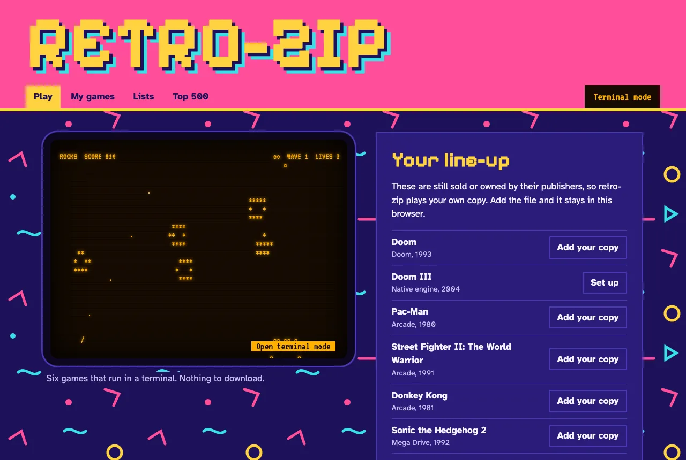
Run it
On a Mac, double-click start.command. Elsewhere, with Node 22 or newer:
npm install
npm run vendor # downloads about 310 MB, keeps about 85 MB
npm start # http://127.0.0.1:8642
Terminal mode, from the repository folder, in a window of at least 80×24:
node bin/retro-zip.mjs # menu
node bin/retro-zip.mjs play rocks # one game
Use it
What you can play
Where it comes from
Rocks, Snake, Swarm, Bricks, Paddle, Hop
Built in
Doom shareware episode
Built into the Doom engine
36 homebrew and free arcade games, including Freedoom
Each author’s permitted source
Your own files, including the Top 500 list
Your copies, kept in your browser
retro-zip doesn’t download commercial games. They are listed so you can add your own copy. Doom III runs as a native Mac app through dhewm3 with your own game files.
How it works
Local serverListens on 127.0.0.1 only, and accepts a catalogue ID, never an address
DownloadsHTTPS from approved hosts, with exact size and SHA-256 checked
GamesRun in a sandboxed iframe with no origin, so they can’t reach your library or other sites
The emulators need unsafe-eval, so that permission exists only inside the sandbox. Zip files are unpacked in memory with caps on count and size, and program files are refused.
Limits
The browser Doom engine has no sound.
Nintendo 64, Saturn, DS, Dreamcast, PSP and PlayStation 2 aren’t supported, and GameCube and Wii files are refused.
PlayStation games may need BIOS files that aren’t included.
Your library lives in one browser’s storage, so clearing site data deletes it.
Several emulator cores restrict commercial use, so retro-zip must not be sold.
Credits
GPL-3.0 licence, with the emulators and game sources listed in the repository’s NOTICE. Built on EmulatorJS and doom.wasm. Not affiliated with any game publisher. Source: Gitguy268/retro-zip.
Spot apporteert
A fetch game. Throw a ball across a park for Spot, a black labrador, and look after him: he gets tired, hungry and thirsty.
Games
In Dutch
MIT licence
Available online
Run it
Needs Node 20.19 or newer. From a copy of the repository:
npm ci
npm run dev
npm run build makes a static bundle in dist/ for any static host.
Play
Drag the ball upwards and let go to throw. Aim for the flag: a throw scores up to 100 points, more the closer its first bounce lands, and nothing beyond 6 m. Tap Spot to pet him.
Button
What it does
Zit, Blijf, Bring, Aus
Sit, stay, fetch, drop. The bar under each shows how well Spot has learnt it.
Beloon
Reward him
Voer, Water
Fill his bowls
Foto
Photo mode: move around Spot, set a lens from 14 to 200 mm and the exposure from −2 to +2 EV, pick one of five filters, save a PNG
Geluid, Volledig scherm
Sound on or off, full screen on or off. The full-screen button hides where the browser can’t do it, as on an iPhone.
The four bars in the corner are his energy, hunger, thirst and trust. He listens better the more he trusts you. The park has a day and night cycle and weather; ?tijd=18 fixes the hour, ?weer=helder, regen or sneeuw the weather, and ?reset starts without the saved game.
How it works
three.jsDraws the park, Spot and his fur, all generated in code
PhysicsThe throw, the bounces and Spot’s run are unit tested
localStorageKeeps Spot’s state and your best throw; no network requests
Spot’s Biscuit Snake
A snake game in one HTML file. Spot licks up biscuits to grow, and has to mind the fence, the flowers and his own tail.
Games
MIT licence
Available online
Run it
Open index.html in a browser. There is nothing to install or build.
Controls
Input
What it does
↑↓←→ or WASD
Steer
Space
Pause and resume
M
Sound: all, effects only, off
Gamepad
D-pad or left stick; A or Start pauses. It rumbles on a crash and on a golden biscuit.
Phone
Swipe on the lawn, or use the on-screen pad
AI plays
Spot steers himself. Any steering key, a swipe or a second press takes over again.
Pick a speed first: Puppy, Normal or Zoomies. Spot speeds up as the biscuits add up, and gold ones score 5.
How it works
Input queueTurns wait their turn; reversing into yourself is refused
Tile gridThe tail leaves a cell before the head arrives
BiscuitsDropped only on empty cells, with crumbs flying off
The best score per speed and your settings stay in localStorage. Until you press AI plays, the only request is for two Google Fonts, with fonts on your device as the fallback.
AI plays
The moves come from Laya, a small decision model by Convai Innovations that scores a list of options instead of writing text. Each step the game keeps the moves that don’t crash Spot and leave him room, describes each one (“goes toward the biscuit, leaves 212 open squares”) and lets Laya pick. On its own Laya tends to walk in circles, which is why the game narrows the options first.
It needs WebGPU. Without it the button is greyed out.
The first press downloads the model, about 851 MB, from Hugging Face and loads ONNX Runtime Web and tokenizers.js from jsDelivr. The model stays in Cache Storage, so later presses start in a few seconds.
Spot waits on each square while Laya thinks, so the speed buttons don’t apply.
Credits
Ideas from epidemian/snake (Unlicense), janbodnar/Java-Snake-Game (BSD-2-Clause) and Phaser (MIT), written from scratch. Fonts: Press Start 2P and VT323 (SIL Open Font License). AI plays runs Laya by Convai Innovations (Apache-2.0) on ONNX Runtime Web (MIT), with tokenizers.js (Apache-2.0).
Spot-light
Spot chases a laser dot around the living room, and you keep it out of his paws. Three games, in 2D or 3D, and in 8-bit if you like.
Games
MIT licence
Available online
Run it
Double-click index.html. It is one file with three.js beside it in vendor/, so it runs from disk with nothing to install.
Play
The pointer is the laser. Move it and Spot runs after the dot.
Game
Goal
Dodge
60 seconds and 3 lives. Keep the dot out of his paws. He gets faster as the clock runs down.
Endless
No clock. Count how often he gets it, and beat your longest dodge streak.
Lure
90 seconds to steer him into the cup, the sock and the ball.
Key
What it does
V
Switch between 2D and 3D
B
Switch between Normal and 8-bit
Esc
Pause
How it works
The dotFollows your pointer across the room
SpotChases it, faster with time in Dodge
Two renderersA 2D canvas and a three.js 3D room show the same game
8-bit draws at a fifth of the resolution and scales up without smoothing; in 2D it also snaps every colour to a 16-colour palette.
Limits
No sound, touch controls or saved high scores yet. The fonts come from Google Fonts, with fonts on your device as the fallback when offline.
The Rubber Hose Revue
A programme in two parts: a rooftop cartoon with a musical saw, and Cannonball Capers, an asteroids game drawn the same way.
Games
MIT licence
Available online
Run it
Open index.html and pick the picture or the game. Everything, including the music and the crackle, is made in the page; there are no image or sound files.
Controls
Key
The picture
The game
Click
Start
Arrows
Steer and thrust
Space
Fire
P
Pause
M
Mute
Mute
S
Sepia on or off
Sepia on or off
F
Steady the picture
Steady the picture
The game has buttons on touch screens, and a gamepad works too.
How it works
DrawingRubber-hose characters drawn in code
FilmSepia and a wobbling picture, which F steadies
SoundA narrow band like a gramophone horn, over surface crackle
edu-code-camp_□×
edu-code-camp
Learn to code by writing real code. Short lessons, hidden tests, XP and a local AI tutor, all offline in your browser.
Tools
MIT licence
Available online
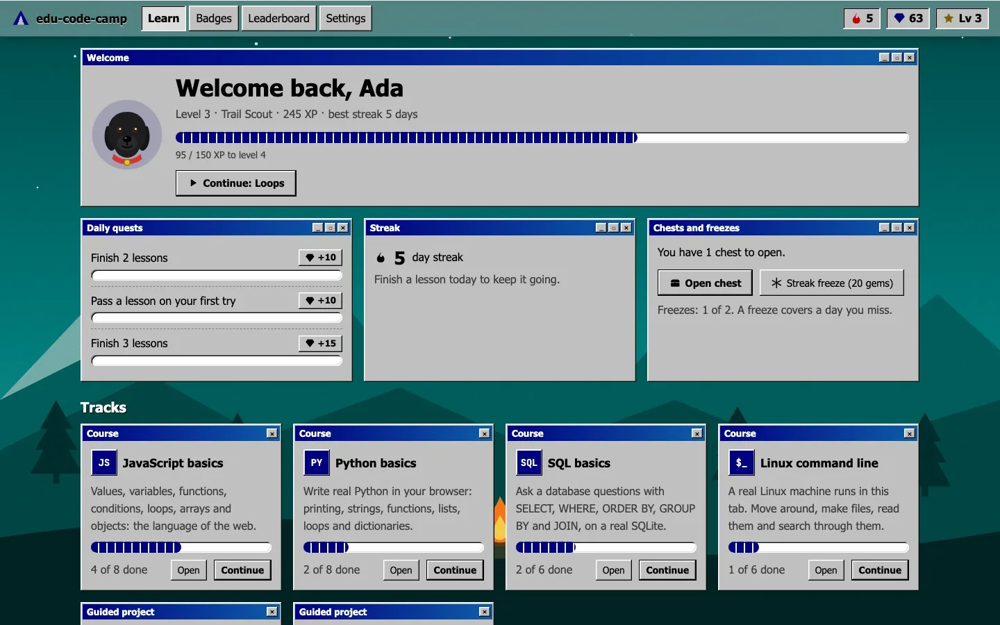
Run it
Open the live version. On a Mac, you can also double-click start.command. With Node 20 or newer:
npm ci
npm run build
npx vite preview # http://localhost:5281
Opening index.html by double-click doesn’t work, because browsers block the code runners on file:// pages. The page tells you so.
Use it
Track
Lessons
Runs on
JavaScript basics
8
A Web Worker, stopped after 4 s if a loop never ends
Python basics
8
Pyodide
SQL basics
6
sql.js, with a fresh database per run
Linux command line
6
Alpine Linux in v86, booted in the tab
Project: camp to-do list
5 steps
Python
Project: shell scavenger hunt
4 steps
Linux
Passing earns XP, keeps your streak going and fills your chest. There are also 17 badges and three daily quests, and Settings has eight looks plus export and import of your progress.
Spot the tutor is a black labrador with a red collar who gives hints, not answers. His model is a 672 MB download, made only when you press Download Spot.
How it works
LessonsA folder each: lesson.md, a starter file, hidden tests and a solution
RunnersOne Web Worker per language. A run that takes too long is stopped by ending the worker
LinuxAlpine i386 in v86. Checks go over the serial port, so they never show in your terminal
SpotMiniCPM-V 4.7 1B through wllama, with every 64 MiB part checked against a pinned SHA-256
OfflineA service worker precaches the app, Pyodide and sql.js on the first visit
Limits
Building it yourself without the Linux image (npm run image, needs Docker) leaves out the Linux lessons and the scavenger hunt.
Your code, progress and the Linux VM stay in this browser until you clear it, so export a backup to move them.
The leaderboard only lists campers on this device.
Credits
MIT licence, and all lessons are original. Pyodide is MPL-2.0, the Linux image contains GPL software, and Spot’s model is Apache-2.0 and not part of the MIT grant. Not affiliated with freeCodeCamp, boot.dev or Microsoft. Source: Gitguy268/edu-code-camp.
Xiao
A calm, private browser built on Zen: ad and tracker blocking built into the browser, stricter privacy settings, Tor tabs, and a search of your own.
Tools
MPL-2.0 licence
Available online
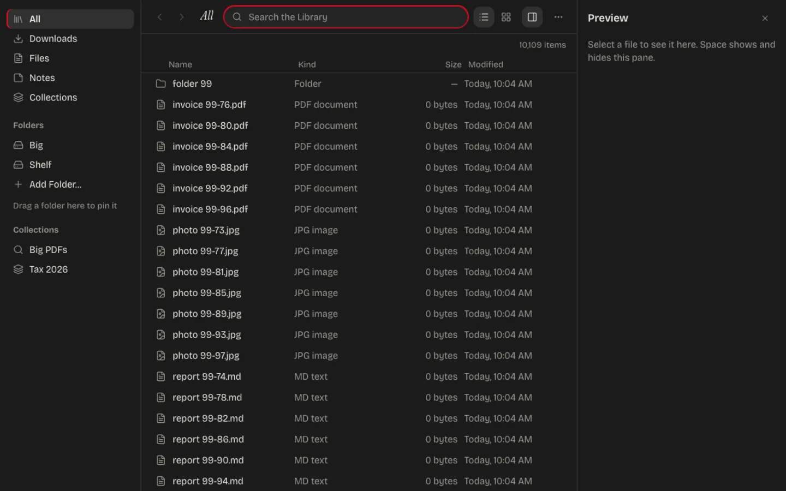
Install
Xiao comes as a kit that makes its own copy of the Zen you already have, with a profile of its own. Your normal Zen isn’t touched. Download xiao-kit.zip from the latest release, unzip it and run:
sh install.sh --tor --search # macOS and Linux
powershell -ExecutionPolicy Bypass -File install.ps1 -Tor # Windows
Then open Xiao from your applications. --uninstall removes everything it added.
Use it
Blocking is built into the browser, with a per-site switch on the Xiao button.
82 settings are hardened, and strict mode adds 10 more, including fingerprinting resistance.
Tor tabs are a container with a circuit per site. If Tor stops they fail, and never fall back to a direct connection.
Search goes through SearXNG by default, or through your own local copy with Xiao Search.
Silent mode makes the browser connect to nothing by itself. A 10-minute idle test logs every connection and finds none.
Optional features stay off until you add them: a Library of your files built from OpenFinder, a sticky note, Send to a device, a reader, a converter and PDF tools.
The start page has four styles: Normal, Liquid glass, Terminal and Retrofind.
How it works
The kitCopies Zen, adds the loader and Xiao’s code, and swaps the name and icons
The loaderFirefox’s AutoConfig loads Xiao’s code from the app folder before any window opens
The blockerMatches every request against Ghostery’s engine in the parent process
The launcherRebuilds the copy when Zen updates, starts Tor and search, and stops them when Xiao quits
Updates are signed with Xiao’s own key, installed at the next start, and undone if that start fails.
Limits
It isn’t anonymity. Tor tabs hide your address, but Xiao doesn’t look like Tor Browser. Use Tor Browser when that matters.
Fingerprint noise isn’t invisibility, and web workers aren’t covered.
Silent mode has a cost: new bad sites and revoked certificates stop being caught, and security fixes wait until you check.
Windows is tested only by CI, and has no Xiao Search. NixOS and Alpine aren’t supported.
Full builds from Zen’s source are set up, but none has been compiled yet.
Credits
Mozilla Public License 2.0, built on Zen Browser and Firefox. Blocking is Ghostery’s engine, and Xiao Search is SearXNG. Not affiliated with or endorsed by Zen, Mozilla, Mullvad, the Tor Project, Ghostery, SearXNG or The Browser Company. Source: Gitguy268/xiao.
Archium
An Arc and Zen style browser with Helium’s privacy defaults, for Linux (Arch) and macOS. It runs on Electron’s Chromium rather than a Helium build.
Tools
MIT licence
Available online
Run it
With Node 24 or newer. On a Mac you can double-click app/start.command. The first run installs Electron and the ad blocker, about 350 MB.
cd app
npm ci
npm start
On Arch Linux, npm run dist:linux builds a package that makepkg -si in packaging/arch installs. Spaces import from Arc or Zen, and bookmarks from Chrome, Brave, Helium, Vivaldi or Chromium.
Use it
Spaces each have a name, an emoji and a colour gradient, and can have their own cookies and logins. Favourites sit on top, with pinned tabs and folders under them.
Today tabs go to an archive after 12 hours, a day or a week.
⌘T opens a command bar that searches tabs in every space, history, the archive and commands.
Also: Glance and Peek, split view of up to four pages, compact mode, and Boosts and Zap for changing a site.
Four looks: Arc, Zen, Liquid Glass and Retro 98.
Turn on Settings › Agents, and the archium-cli command and an MCP server let AI apps list, open and read your tabs. Private windows stay invisible to them.
How it works
A transparent window holds the interface, with one Chromium view per visible tab placed in the card. A single request filter runs per session.
Blocking uses Ghostery’s engine with EasyList, EasyPrivacy, uBlock Origin’s lists and cookie notices.
68 tracking parameters are removed before a page loads, and http addresses are tried over HTTPS first.
Third parties get no cookies, and caches, connections and storage are kept per site.
On a subset of privacytests.org’s tests it passes 67 of 76. Electron with its defaults passes 11 of 63.
Limits
It is Electron, not Helium, so Chromium updates arrive with Electron releases.
There is no fingerprint noise. Use Tor Browser when you need to be anonymous.
No Chrome extensions, password saving or sync yet.
It is unsigned on macOS, so right-click and choose Open the first time.
Arc wasn’t decompiled. Its features are rebuilt from how Arc behaves.
Credits
MIT licence. Files from Zen stay MPL-2.0, and the glass is by Archis Vaze (MIT). The repository’s NOTICE lists everything it uses. Not affiliated with The Browser Company, Zen, imputnet, Brave or Ghostery. Source: Gitguy268/archium.
Hillium
A privacy layer for the Helium browser: an offline new tab, search that runs on your own Mac, a Tor switch with a kill switch, and a URL cleaner. Plus Hillium Browser, a runnable browser with the same protection, three looks, Glance and a local assistant.
Tools
GPL-3.0 licence
macOS
Available online
Hillium is a companion kit for now: an extension and scripts on top of a stock Helium release, not a browser you download. Its own builds are planned.
Install
You need macOS, Helium and Homebrew.
Start local search: double-click searxng/install.command. SearXNG starts now and at every login, on 127.0.0.1:8888, without Docker.
In Helium open chrome://extensions, turn on Developer mode, click Load unpacked and choose the extension folder.
Add a search engine with the URL http://127.0.0.1:8888/search?q=%s and make it the default.
For Tor, run brew install tor && brew services start tor, then pick Tor in the Hillium popup.
Features
Feature
What it does
Offline new tab
Clock, search box and quick links, with no network requests
Private search
SearXNG on your Mac, with a public instance as the fallback
URL cleaner
27 rules strip utm_*, fbclid, gclid and other tracking parameters
Tor or proxy switch
One click routes all traffic through your own Tor or a proxy
Kill switch
When Tor stops, pages fail to load; they never fall back to a direct connection
WebRTC block
Stops WebRTC leaking your address, forced on while proxied
Own Helium services
Optional: services/run-local.sh runs Helium’s services server on your Mac, so filter lists, !bangs and extensions never come through imputnet’s servers. Needs Docker and mkcert.
How it works
PopupYour choices go into extension storage
Background workerApplies the proxy, WebRTC policy and redirect rules
ChromiumNever falls back to a direct connection from a fixed proxy
Chromium never sends loopback traffic through a proxy, so in Tor mode a redirect rule sends local searches to the public instance, through Tor. The extension asks for access to all sites only because redirect rules need it; it has no content scripts and never reads pages.
Limits
Tor through a Chromium browser is not Tor Browser. It hides your IP from sites, but your browser fingerprint still identifies you.
Local SearXNG queries Google, Bing and others from your IP outside Tor mode.
Nothing is compiled into the browser yet, so the extension can be switched off.
Credits
Builds on Helium by imputnet, which builds on ungoogled-chromium. Search is SearXNG. Not affiliated with any of them, Google or the Tor Project.
Skyhold
Stage files, back them up to any cloud, then drop the local copies. One Go binary with a command line, a terminal UI and a web UI.
Tools
MIT licence
Available online
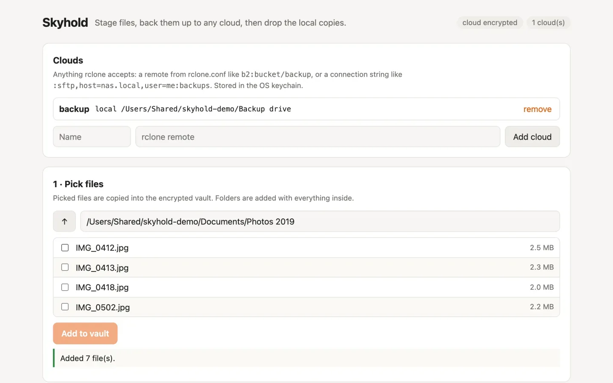
Install
You need Go 1.27 or newer. The first build downloads the rclone backends and takes a few minutes.
go install github.com/Gitguy268/skyhold/cmd/skyhold@latest
A first backup:
skyhold init # release password, then write down the cloud key
skyhold remote add b2 b2:my-bucket/skyhold # any rclone remote
skyhold add ~/Documents/Taxes
skyhold push
skyhold verify
skyhold release # lists every file, then asks for the password
Use it
Run skyhold with no command for the terminal UI, or skyhold serve for the web UI on 127.0.0.1:7480.
S3, Backblaze B2, Google Drive, OneDrive, Dropbox, WebDAV, SFTP and about 60 more work through rclone.
skyhold restore brings files back to their original paths. skyhold recover restores everything on a new machine with only the cloud key and the remote.
How it works
StageEach file is encrypted into the vault with its path, size, mode and SHA-256 recorded
UploadFiles go to every cloud, encrypted again with the cloud key
VerifyEach cloud copy is downloaded and compared
ReleaseAfter your password and another check, the vault key, the vault and the originals are deleted
Two keys are kept apart. The vault key lives only in the OS keychain, and release destroys it. The cloud key is separate, so destroying the vault key can’t lock you out of your backup. Nothing is deleted unless every file is verified on every cloud at the moment of release, and an original that changed since you added it is kept.
Limits
Originals are deleted normally, and on SSDs a deleted file can’t be guaranteed unrecoverable. Release checks for full-disk encryption and warns if it’s off.
Time Machine and other snapshots may still hold the originals.
After release, the cloud copy is the only copy. Without the cloud key, encrypted copies can’t be decrypted by you or anyone else.
Verifying encrypted copies downloads them, which costs money on clouds that charge for it.
The SMB backend is left out because of its licence. Use SFTP or WebDAV for a NAS.
Credits
MIT licence. Skyhold compiles in rclone and other libraries under their own licences, listed in the repository’s NOTICE. Encryption uses age. Source: Gitguy268/skyhold.
Favorites Desktop Documents Sandbox Tags
OpenFinder
A file manager that runs in your browser, styled after the Finder with liquid glass. It works on real folders on your computer, and inside the Xiao browser it is the Library.
Tools
GPL-3.0-or-later licence
Available online
Run it
npm install
npm run build
npm start # then open http://localhost:4627
On a Mac, start.command does all three and opens the browser. Use Chrome, Edge, Brave, Opera or Arc.
Use it
Click Allow File Access…, pick a folder and start working. There is no account, database or config file, and your files never leave your computer. The Sandbox is private storage inside the browser, for trying it without your own files.
Milestone
Contents
State
1
Window, glass sidebar and toolbar, folder access, Sandbox, light and dark
Done
2
Icon, List, Column and Gallery views, Quick Look, Get Info, tags, file operations
Folder pickerYou grant one folder through the File System Access API
The pageReads and lists it directly; nothing is uploaded
GlassEdge refraction adapted from Liquid Glass Studio
Limits
Chromium browsers only: Firefox and Safari don’t offer folder access.
Brave ships with folder access off; enable brave://flags/#file-system-access-api.
Browsers refuse Home, Desktop, Documents and Downloads themselves. Pick a folder inside one.
Permission is asked again after a browser restart.
Credits
Not affiliated with Apple. Feature ideas from FileBrowser Quantum (no code used). Icons from Lucide (ISC).
Convert to it!
A file converter that works between almost any two formats without uploading anything. My fork adds output settings for each conversion, and much more.
Tools
Fork
GPL-2.0 licence
Available online
Run it
On a Mac with Bun, double-click start.command: it builds when needed, serves on http://localhost:4319 and opens the browser. bun run start does the same anywhere. Opened straight from disk, the page explains why that can’t work.
Use it
Add files. Files of different types can go together, and you can add more to a selection that is already open.
Pick an output for each type, or click one file to choose its own.
Press Settings for options that fit the format: quality, frame rate, bitrate, size, start and end time, metadata removal, a zip password.
Convert. Several outputs arrive as one zip.
What my edition adds
A Tools row: read text (OCR), remove background, upscale 2×, contact sheet, check audio, make a video, merge or split PDFs.
Compress: converts a file to its own format and keeps whichever is smaller.
Cutting video and audio without re-encoding, the way LosslessCut does.
PDF tools: pages to keep, rotation, passwords, page numbers, watermarks.
More formats: 3D models, subtitles, spreadsheets, Outlook messages, vCards and about 65 more image formats, including camera RAW.
Audio edits: even out loudness to −14 LUFS, fade in and out, mix down to mono, play backwards, trim silence, and change the speed without changing the pitch.
A liquid glass action bar and dialogs, made with LiquidGlass UI and Liquid Glass Studio.
How it works
Your fileRead in the page, never uploaded
RouteA chain of tools is found from input to output
ToolsFFmpeg, ImageMagick, mediabunny, mupdf and others, in WebAssembly
DownloadOne file, or one zip, optionally AES-256 encrypted
When the page is cross-origin isolated, encoding uses several cores: an 8-second 720p clip encodes in 3.1 s instead of 11.5 s. A Content Security Policy keeps converted HTML, SVG or EPUB files from loading anything or running script.
Limits
Output settings are read by six of the conversion tools. When a conversion ends in another one, the result says the settings weren’t applied.
Upscaling needs WebGPU. OCR downloads about 10 MB and background removal about 58 MB on first use.
Windows Explorer and macOS Archive Utility can’t open AES-encrypted zips; 7-Zip and Keka can.
Credits
Fork of p2r3/convert (GPL-2.0). Ideas from VERT, Stirling-PDF, LosslessCut, ConvertX and others are named in its README.
Retrofind_□×
Retrofind
Private web search on your own Mac, in the style of 1998. SearXNG runs underneath without Docker, under a start page modelled on early Google in a Windows 98 window of liquid glass.
Tools
macOS
MIT licence
Available online
Install
You need macOS and Homebrew. Run brew install uv, then double-click start.command in a copy of the repository. The first run installs SearXNG, which takes a few minutes; after that it opens http://127.0.0.1:8898/. Both services start again when you log in.
To make it your browser’s search engine, add a site search with this address:
http://127.0.0.1:8898/search?q=%s
sh searxng/uninstall.sh stops both services and deletes everything the installer made.
Use it
The start page has a wordmark with a drop shadow, I’m Feeling Lucky, and a choice of Web or News.
Results come in a blue “Searched the web for…” bar, with green addresses and a “Retroooofind” strip of pages at the bottom.
The window frame, title bar, taskbar and Start button are liquid glass that bends the sky behind them. Results stay on solid white, so they are easy to read.
How it works
The pagePlain HTML, CSS and JavaScript on 127.0.0.1:8898
server.pyPython’s standard library only. It passes on the query, the page and the category, nothing else
SearXNGOn 127.0.0.1:8893, asking several search engines at once
SearXNG lives in a Python environment made with uv and is kept running by two LaunchAgents, so there is no Docker. server.py strips every result down to its title, link, snippet and engine names. Only http and https links reach the page, and results are inserted as text, never as HTML.
Limits
No image search, on purpose: 1998 had none, and the thumbnails would load from other servers.
No result totals, because SearXNG doesn’t report them.
Search engines sometimes block or slow down your address, so results can come from fewer engines.
The glass bends only in Chromium browsers; Safari and Firefox get glass that doesn’t bend.
macOS only, because the installer uses LaunchAgents.
Credits
Search is SearXNG (AGPL-3.0), downloaded at a pinned commit and run unchanged as a separate program. Liquid glass from kwlck/liquid-glass-web and the edge highlights of kevinbism/liquid-glass-effect (both MIT). The cloud wallpaper is Qrer’s. The wordmark, icon and Windows chrome are original drawings; Retrofind isn’t affiliated with Google or Microsoft.
web2app
Turn any website into a small Mac app. A page on your own Mac for the Pake command-line tool, with a build queue, a history, offline builds and phone pairing.
Tools
macOS
GPL-3.0-or-later licence
Available online
Run it
Double-click start.command. It installs Pake the first time, starts the server and opens http://localhost:7417. Building apps needs Rust; web2app tells you if it’s missing.
Use it
Start from a popular app, enter a web address, or choose files on this device.
Set the name, window size, zoom, title bar, dark mode, tray icon and the other Pake options. The page shows the exact pake command it will run.
Press Build app. Builds wait in a queue and run one at a time.
Download the .dmg or .app, or install it straight away. Every build stays in History.
Use on phone lets a phone on the same Wi-Fi start builds: scan the QR code on the Mac, then type the 6-digit code it shows. It is off until you turn it on. In History you can cancel a build, build it again, open the app or show it in Finder.
How it works
The pageYour options become Pake flags
server.jsA plain Node server on 127.0.0.1 queues the build
PakeWraps the site in a Tauri app with Rust
HistoryEach build keeps its folder and log
One file lists every flag the form may set, and both the server and the page read it, so the command shown is always the command run. Builds work offline once Pake and its Rust cache are installed: about 45 seconds for an app.
Limits
Mac only. Phone access needs the macOS firewall to allow Node.
Credits
A front end for tw93/Pake. It has its own name because Pake asks derived tools not to use its name or logo.
Qrer: QR Editor_□×
Qrer
A QR code editor that looks like Windows 98, with liquid glass on its title bar and taskbar over a cloud desktop. It reads codes as well as making them. Version 2.7 adds an Art look and animated codes, saved as GIF.
There is no build step and no runtime dependency. Clipboard and offline use need HTTPS or localhost.
Use it
Tab
What you set
Content
A link, Unicode text, Wi-Fi credentials or an email draft
Style
Six presets, module, corner and eye shapes, colours, and a caption, outline or card frame. Photo look puts the code over a picture and checks it still scans.
Logo
A local image in the middle; error correction goes up automatically
Export PNG or SVG at exactly 512, 1024 or 2048 pixels, copy to the clipboard, or make a 1080 × 1440 share card. Ctrl/⌘+Z undoes up to 30 style changes. Read QR… reads a code from an image or the camera and never opens links by itself. Check this code scans your export.
The desktop works like Windows 98: drag the window by its title, minimise to the taskbar, use the Start menu. View › Float export toolbar detaches the export controls.
How it works
EncodeYour content becomes a QR matrix in the page
StyleShapes, colours and frames are drawn on top
VerifyPhoto look decodes the result before it can be exported; any other export is scanned when you press Check this code
Glass goes only on chrome that sits over the wallpaper, because glass bends what is behind it and a flat grey panel gives it nothing to bend. Chromium refracts the live backdrop; WebKit and Gecko refract a copy of the painted cloud wallpaper. The code itself is never under glass. After the first visit everything works offline.
Limits
Custom colours, shapes and logos can make a code harder to scan: always test it on the device and at the size you’ll print. Anyone who receives a Wi-Fi code can read the password in it.
Credits
Clean codes are encoded with Nayuki’s QR Code generator and read with Nimiq QR Scanner (both MIT). Liquid glass from kwlck/liquid-glass-web, gentpan/liquidglass and Liquid Glass Studio (all MIT). The taskbar and controls adapt Windows 98 Web Edition (MIT), and the Start menu follows WIN98-template (Unlicense). The icons and wallpapers are original; no Windows media is bundled.
QRcodeforeveryone
Free QR codes that don’t expire. Pick the colours and put a logo in the middle.
Tools
MIT licence
Available online
Open it
Use it at qrcodeforeveryone.vercel.app. It is one static page. A copy runs from any static server, but it needs an internet connection, because qrcodejs loads from cdnjs:
git clone https://github.com/Gitguy268/QRcodeforeveryone.git
cd QRcodeforeveryone
python3 -m http.server 8000
Use it
Type or paste a link or short text. It is encoded as plain text, so a Wi-Fi password won’t make phones offer to join the network.
Choose the dark and light colours, and add a logo for the centre if you like.
The code redraws as you type. Right-click it to save the image.
How it works
Your textStays in the page
qrcodejsDraws the code in your browser
The imageEncodes the content itself, so there is nothing to expire
There is no redirect service in between: a link in the code keeps working for as long as the website it points to exists.
Paste or write HTML in the editor, or upload local .html, .css and .js files, which are combined into one preview.
Press Update Preview to render it in the pane beside it.
Press Capture as PNG to download the preview as an image.
How it works
EditorYour HTML
Sandboxed iframeRenders it beside the editor. Its scripts run, but they can’t reach the tool’s page
html-to-imageRuns inside the preview and sends the PNG back to the tool, which saves it
The picture is drawn by the browser itself, through an SVG copy of the page, so it matches the preview closely. Text previews are drawn with html2canvas.
Better Aiko
Refined icons for the AI era. A fork of Aiko with 101 more icons, every icon named, and a page to browse, recolour and download them.
Tools
Fork
MIT licence
Available online
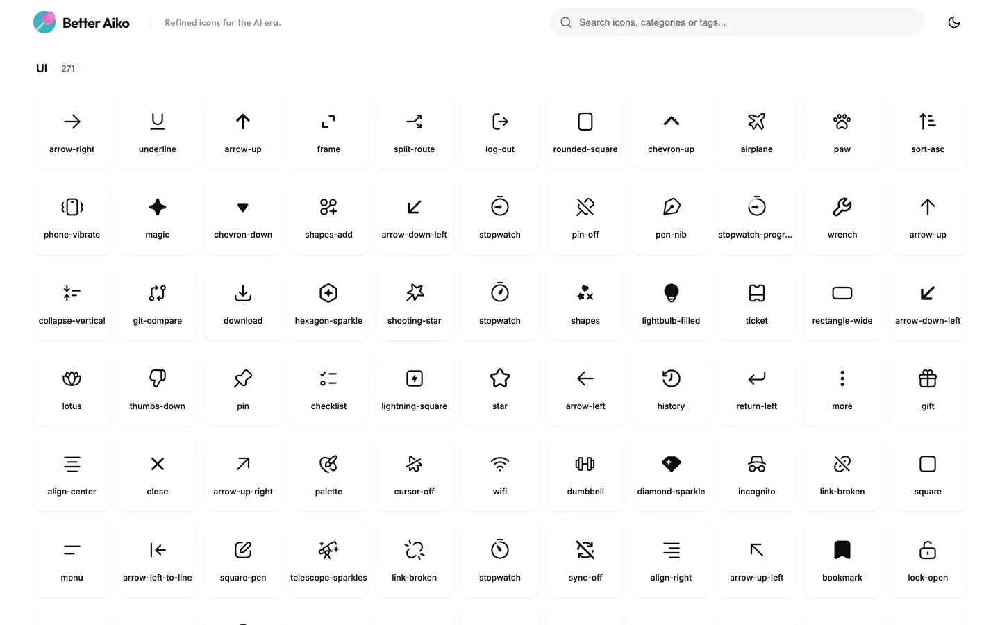
Run it
Open the live page, or serve the folder yourself, because the page loads its icons with fetch. On a Mac, double-click start.command. Elsewhere:
python3 -m http.server 8794
Use it
Search by name, category or tag, and change colours on the fly.
Copy the SVG code, or download single SVG or PNG files.
There are new icons in AI (26), Developer (25), Files (25) and UI (25).
The 132 upstream icons that showed up as “Icon 1a24f4” now have names, categories and search tags.
How it works
Icons live as stroked sources in icons-src/. scripts/build-icons.py turns them into the filled paths in assets/icons.svg and the metadata in index.html, and CI checks that the two stay in sync. New icons use upstream’s 20×20 grid with the same 1.33 stroke, round caps and corner radius.
Limits
The page needs a web server, so it won’t work from a file:// address.
Many upstream glyphs appear to derive from OpenAI’s icon assets, and the sprite includes OpenAI and Y Combinator marks. Those are outside the MIT grant.
Serve the folder, because the animation data loads over HTTP:
python3 -m http.server 8000
Use it
Once the script is on a page, Clippy appears on it. There is nothing to install and no framework involved.
How it works
It is one JavaScript file and one stylesheet. The animation data and the character artwork load from the assets folder.
Limits
It has to be served over HTTP, so it won’t work from a file:// address.
The MIT licence doesn’t cover the Clippy artwork in assets/clippy/.
Credits
MIT licence for the code. The Clippy character artwork belongs to its owner. Not affiliated with or endorsed by Microsoft. Source: Gitguy268/clippy-choppy.
~ $ lvw model pull hf:owner/model:Q4_K_M
LvW-harness
A local-first AI agent with a one-command model manager for Hugging Face, GitHub and GitLab.
Terminal & AI
MIT licence
Available online
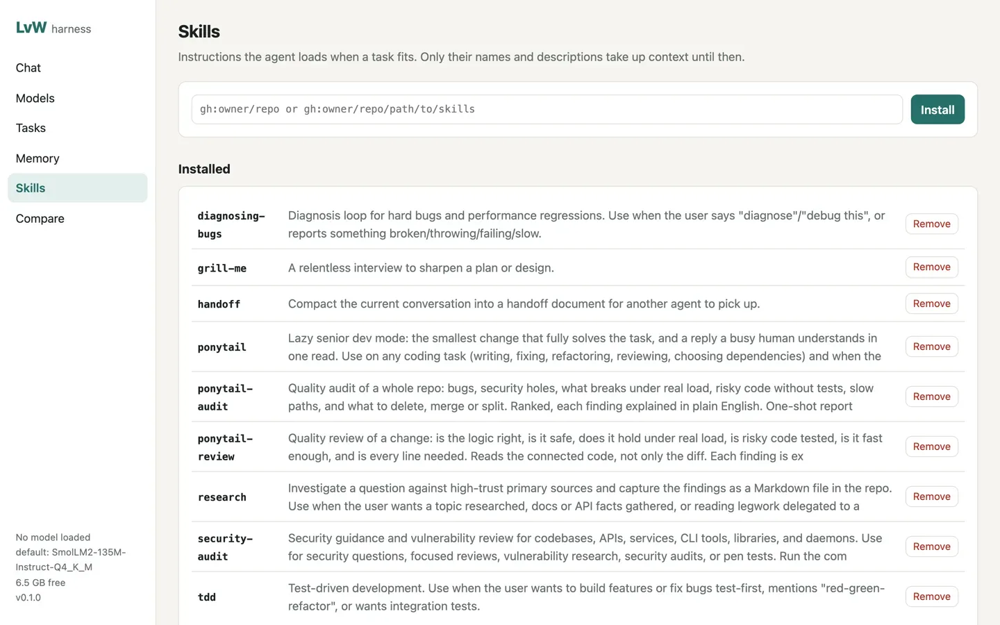
Install
You need Bun 1.4 or newer on macOS (Apple silicon) or Linux. On a Mac you can also double-click start.command for the web UI.
bun install
bun link # puts lvw on your PATH
lvw setup # downloads llama-server, offers a starter model
lvw doctor # checks disk, memory, runtimes, browser and tokens
Use it
lvw chat # terminal chat; asks before it changes anything
lvw run "add a --verbose flag and run the tests"
lvw research "how do llama.cpp quant types compare?"
lvw serve # web UI on http://127.0.0.1:7878
lvw model pull takes Hugging Face, GitHub and GitLab releases, any URL or Ollama. lvw model rm removes a model with every file it brought.
Downloads resume, check sha256 where the host publishes it, and refuse to leave less than 2 GB free.
By default it asks before writes and commands that change things. --auto, --readonly and --sandbox docker change that.
18 skills are bundled, and tasks, routines, approvals, MCP servers and plugins are built in.
How it works
ModelsRun locally through llama.cpp or Ollama. Cloud models work if you add a key
AgentFile, shell, web, browser, memory and skill tools, with budgets per run
MemoryMarkdown notes with full-text search, plus AGENTS.md or CLAUDE.md as project rules
Web UIChat, Models, Tasks, Memory, Skills and Compare. It loads nothing from the internet
The server listens on 127.0.0.1 unless you say otherwise, and any other address needs a login token.
Limits
Small local models handle short tasks well, but get unreliable over long chains of tool calls.
Only GGUF models run locally. Other formats are stored, not run.
--sandbox docker covers shell commands only, and file tools still work directly in your folder.
The Telegram bot and lvw improve are experimental.
Credits
MIT licence. Bundled skills keep their own MIT licences, and models keep theirs. Ideas from other projects are credited in the repository’s NOTICE.md. Not affiliated with Hugging Face, GitHub, GitLab, Telegram or Ollama. Source: Gitguy268/LvW-harness.
~ $ usb-llms setup --model llama-3.2-3b
USB LLMS
Run AI models from a USB stick on macOS, Windows and Linux, with or without the internet.
Terminal & AI
MIT licence
Available online
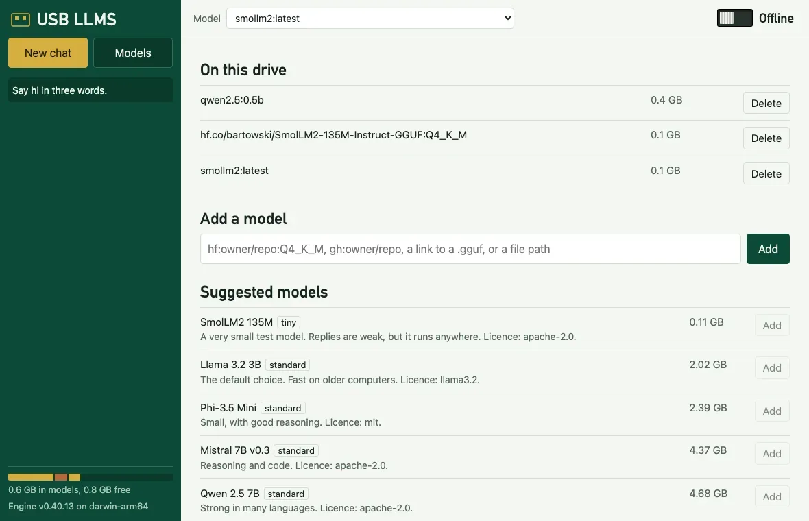
Start
Format the stick as exFAT, so all three systems can use it. Plan for at least 16 GB.
Copy the release folder onto it.
While online, open start.command (macOS), start.bat (Windows) or sh start.sh (Linux), and choose Set up this computer.
Each computer type needs its engine once, and models are shared between all of them. To build it yourself, with Go 1.24 or newer:
usb-llms pull takes a catalogue id, hf: and gh: names, a link, a local file or the Ollama library. usb-llms mode offline blocks outside connections, and it can also carry LvW-harness. Stop the engine before you eject the stick.
How it works
The program finds the folder from its own location, so the drive letter doesn’t matter. The drive holds launchers, a program per system, an Ollama engine per system, shared models and your data. The engine’s home and temp files stay on the drive, so it leaves no files on the computer.
Offline mode refuses USB LLMS’s own requests, turns off Ollama’s cloud features, and gives the engine, Open WebUI and LvW-harness a dead proxy address. For remote services, only the name of the key’s variable is saved, so a lost stick can’t leak it.
Limits
Windows and Linux build and have CI jobs, but have never been run.
It has been tested on an exFAT disk image, not a real USB stick. Real sticks are slower.
Intel Macs and NVIDIA and AMD GPUs are untested, because no such hardware was available.
The drive isn’t encrypted.
Offline mode isn’t a firewall. It stops programs that respect proxy settings.
Only GGUF models run. Models labelled uncensored have had safety refusals removed, and can produce harmful or false text.
Credits
MIT licence, written from scratch to replace USB-Uncensored-LLM and Portable-AI-USB by techjarves. Ollama, Open WebUI and the models keep their own licences and are downloaded separately. Source: Gitguy268/usb-llms.
~ $ apk add python3
TabShell
A real Linux terminal in a browser tab. Install packages, play terminal games, then press Reset and it’s as if nothing happened.
Terminal & AI
MIT licence
Available online
Run it
On a Mac, double-click start.command. It starts Docker Desktop, builds what’s missing (a few minutes the first time), serves TabShell on http://localhost:8686 and opens it. Elsewhere, with Node.js 20+ and Docker:
npm ci
npm run image # Alpine VM image
docker build -t tabshell-ubuntu docker # Ubuntu image for Docker mode
npm run build
npm start # http://localhost:8686
Use it
Browser VM
Docker
Linux
Alpine 3.21, 32-bit
Ubuntu 24.04, 64-bit
Runs in
Your browser, on v86
A container on your computer
Install packages
apk add python3
sudo apt install python3, Homebrew
Kept until Reset
Saved in IndexedDB
The container stays
apk add python3 # about 30 s through the default relay
snek # arrow keys to steer, q to quit
Reset throws the machine away and starts a fresh one. Clear only clears the screen. Network sets the relay the Browser VM uses.
How it works
xterm.jsOne terminal for both modes, drawn with WebGL
Browser VMv86 runs Alpine from a 9p filesystem, fetched file by file
Dockerserver.mjs proxies to ttyd and bash in Ubuntu
The VM saves its whole state (memory, devices, changed files) 5 seconds after the screen goes quiet, and when the tab is hidden.
The VM reaches the internet through a Wisp relay over a WebSocket.
The Docker server listens on 127.0.0.1 only, refuses other Host headers and origins, and adds a random per-container password for ttyd. The container has no access to your files.
Limits
No Homebrew in the Browser VM: v86 emulates a 32-bit PC.
It’s an emulator, so compiling or installing large packages is slow.
A saved VM with Python is about 150 MB of browser storage.
Credits
Built on xterm.js, v86 and ttyd. The VM’s default relay is Mercury Workshop’s public Wisp server.
~ $ needle play ~/Music/Jazz
needle
A terminal music player with a full-screen TUI, a no-TUI mode that keeps your shell, a background daemon and a JSON-lines interface for scripts.
Terminal & AI
MIT licence
Available online
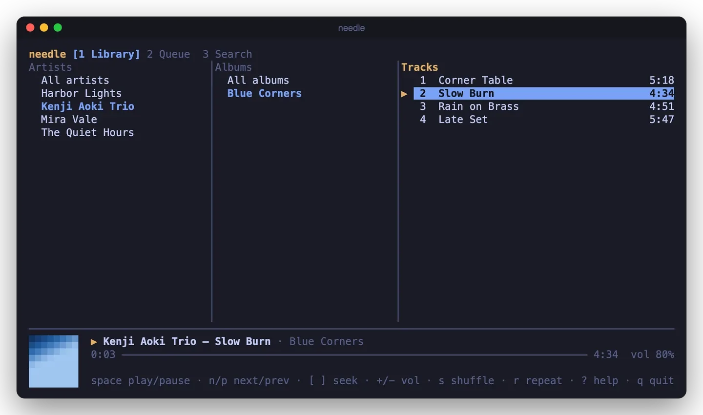
Install
needle needs mpv. On a Mac it can also play through the built-in afplay, with fewer controls. Then install it with Go 1.27 or newer:
Library in three columns, queue, live search, cover art
Inline
needle play <files>
A few live lines under your prompt
Plain
needle play <files> | cat
One line per track, for pipes and logs
Daemon
needle daemon --background
No UI. needle next, status, seek and vol control it
JSON lines
needle --headless
Commands on stdin, events on stdout
The control commands reach whichever needle is running. Optional Pedalboard effects (--fx bass, vocal, warm, loud) start Python only when you ask for them. Nujabes and Ye: Graduation themes are built in, as unofficial tributes.
How it works
coreOwns the queue, shuffle, repeat and events, and knows nothing about terminals
Backendsmpv as a child process, or afplay per track, behind one interface
protoThe JSON-lines protocol, used by the daemon socket, --headless and --raw
LibrarySQLite through pure Go, indexed in parallel and incrementally
Tags and stream titles are stripped of control characters before they reach the screen.
Limits
macOS and Linux only.
No gapless playback.
The afplay fallback can’t seek or play URLs, and volume changes apply from the next track.
Effects are rendered before a track plays, so the first play is slower. Streams play without them.
Kitty, iTerm2 and Sixel art is limited to needle art, and hasn’t been tried in those terminals yet.
Credits
MIT licence. The design borrows ideas, not code, from cliamp, musikcube, listnr, Kronos and haskell-player, credited in the repository’s NOTICE. Pedalboard is GPL-3.0 and is only used as a separate, optional Python program. Source: Gitguy268/needle.
QuickTalk
A quiet place for your voice. Local-first desktop dictation and meeting notes, built with Rust, Tauri 2 and Svelte 5.
Terminal & AI
MIT licence
Available online
Run it
You need Node 22 or newer, current stable Rust, Python 3, Git, CMake and a C++ toolchain. Then:
npm ci
python3 scripts/build-engine.py
npm run tauri -- dev
In the app, choose Settings → Speech models → Everyday → Download.
Use it
Press Cmd/Ctrl+Shift+Space to start and stop dictation. QuickTalk only inserts text if the original app is still active, and the transcript is always saved.
Meetings records the microphone and, optionally, computer audio. Transcription runs after you finish.
Import 16-bit WAV audio, and export Markdown, text, SRT or JSON.
Add Whisper GGML models from Hugging Face, checked by size and SHA-256.
Optional summaries and meeting questions use Ollama or a service you choose. Only text you submit is sent.
How it works
CaptureA bounded queue writes audio to disk
ChunksTranscription reads 30 seconds at a time, in a separate model process for each
UnloadModels leave memory right after processing, and silence is skipped
StorageTranscripts go in SQLite in the app-data folder
There is no telemetry or account. Keys and tokens use the OS credential store.
Limits
This is a 0.1 development build. There is no live meeting transcript, pause and resume, or editable speaker names yet.
Local transcripts aren’t encrypted by QuickTalk.
Windows and Linux builds are automated, but CI isn’t evidence of a completed test on them.
On Wayland, text isn’t inserted automatically, so you copy the transcript yourself.
Calendar connections need your own OAuth registration and live account testing.
Credits
Original code is MIT licensed, and the repository’s THIRD_PARTY_NOTICES.md lists its dependencies. Speech runs on whisper.cpp. Source: Gitguy268/quicktalk.
~ $ cargo run --release -p glyphium
Glyphium
A GPU-rendered terminal emulator in Rust, built on libghostty-vt. Early development.
Terminal & AI
MIT licence
Available online
Run it
You need Rust and Zig, which builds the terminal core. Then, from the repository:
The first build takes several minutes. Close the window to quit.
Use it
It opens as a desktop terminal window. There is no packaged release yet, so for now you build it to try it.
How it works
libghostty-vtGhostty’s terminal core, built with Zig at a pinned commit
RustThe desktop app around it, drawn on the GPU
The repository’s docs/adr/0001-core.md records why it uses this core, and docs/PROGRESS.md records where the work stands.
Limits
This is early development. Milestone 1 is closed, which means the app builds, passes real-window end-to-end scripts, and the core passes fuzz tests.
You have to build it from source.
Credits
MIT licence, with third-party notices in the repository’s NOTICE. The terminal core comes from Ghostty. Source: Gitguy268/glyphium.
~ $ text buy milk #home
textarea-cli
Textarea in the terminal. Type text for a menu, or text buy milk to jot something down without opening anything.
Terminal & AI
MIT licence
Available online
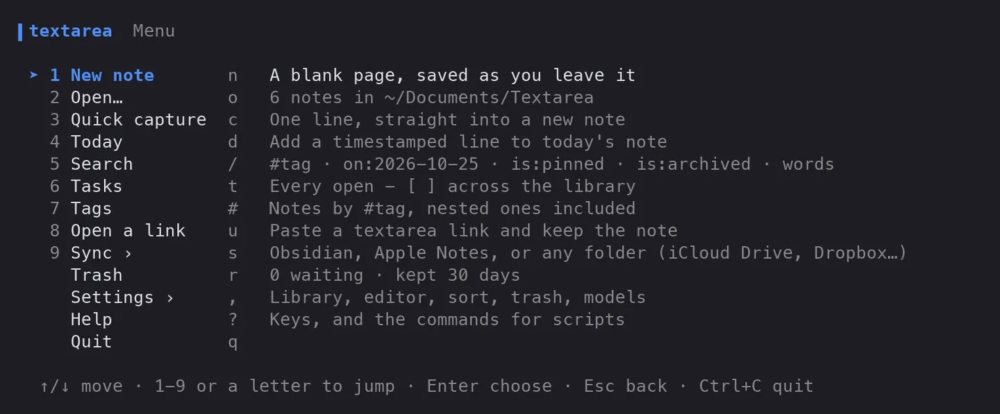
Install
With Go 1.27 or newer. It is pure Go, so it also cross-compiles for Linux, macOS and Windows.
go install github.com/Gitguy268/textarea-cli/cmd/text@latest
Use it
text # the menu
text buy milk #home # capture a note
echo "from a script" | text - # capture from stdin
text today called the bank # a timestamped line in today's note
Open notes with a fuzzy filter, and edit them in the built-in editor or $EDITOR.
Search with words, #tag, on:2026-10-25, is:pinned and is:archived.
text tasks lists every open - [ ] across your notes, and x ticks one.
Share a note as a link, optionally with a password, and export it to nine formats.
Optional speech to text with whisper.cpp, and writing tools with llama.cpp, a llamafile or Ollama, all on your machine.
How it works
The library is a folder, ~/Documents/Textarea by default, and each note is a Markdown file with a short front matter block. It uses the format that the web app’s Folder sync writes, so nothing needs converting. Sync follows the same decision table as the web app, translated to Go and tested against it.
text sync --add folder --path ~/Dropbox/Notes
text sync --add obsidian
text sync --add applenotes
text sync --dry-run
The newest edit wins. Files that sync never created are only imported, never removed, and the first sync deletes nothing.
Limits
Apple Notes sync is macOS only, and formatting Markdown can’t express doesn’t survive the round trip.
Sync runs when you ask, or while text sync --watch is running. There is no background service.
Speech and writing tools need separate programs, and are untested in CI.
Credits
MIT licence. Parts are Go translations of textarea’s code, with its copyright lines kept. The repository’s NOTICE lists its libraries and inspirations. Source: Gitguy268/textarea-cli.
~ $ opencode
opencode, my edition
The opencode coding agent with nine additions for the terminal and the desktop app, from session goals to a shell sandbox.
Terminal & AI
Fork
MIT licence
Available online
Run it
Build it like upstream opencode, with Bun. Local builds are versioned 0.0.0-<branch>-<date>, which OpenCode Zen’s free tier refuses, so connect your own provider with /connect.
What my edition adds
Feature
How to use it
Session goals
/goal <text> sets a goal and starts work. The agent keeps going until it calls goal_complete, you run /goal clear, or 20 unattended turns pass.
Context breakdown
/context estimates the tokens used by the system prompt, each instruction source, each tool and the messages, with the session cost.
Transcript search
/find searches the conversation and jumps to the message
Inline skills
Type $skill-name in a prompt to load that skill
Claude Code hooks
Runs PreToolUse, PostToolUse, UserPromptSubmit and Stop hooks from ~/.claude/settings.json. A project’s own hooks run only with "experimental": { "claude_hooks": "all" }.
Auto mode
"experimental": { "auto_mode": true } lets the model approve routine permission prompts; risky ones still ask
Subagent cap
"experimental": { "subagent_parallel": 2 }
Shell sandbox (macOS)
"experimental": { "sandbox": true }: shell commands may write only to the project, temp folders and package caches
SearXNG search
Set SEARXNG_URL and choose "websearch": { "provider": "searxng" }
How it works
TUI or appBoth talk to the same local server
ServerRuns the session, the tools and the permission checks
Your providerThe model you connected answers
Limits
Session goals and auto mode were tested with stubbed models only, never against a live model.
The sandbox covers the shell tool only, and only on macOS.
A UserPromptSubmit hook can’t block a prompt; its reason is added as context.
Credits
Fork of anomalyco/opencode (MIT). Not built by or affiliated with the OpenCode team.
~ $ spf
superfile, my edition
The superfile terminal file manager with eleven fixes and features: six from open upstream pull requests and five of my own.
Terminal & AI
Fork
MIT licence
Available online
Run it
Build it from source with Go 1.26 or newer:
./build.sh
./bin/spf
make build also runs golangci-lint, so it needs that installed.
What my edition adds
Change
From
Copy (T) or move (M) items straight into the next panel
New
A terminal theme that uses your terminal’s 16 colours
New
Search and sort show up at once in folders with 300+ files
New
Binaries named like man pages (bin.3) are no longer previewed as text
New
Docs for the --chooser-file file picker
New
Copy and paste files through the system clipboard (C / V)
Upstream PR
theme = "auto" picks light or dark from the terminal background
Upstream PR
bat_flags option for the bat previewer
Upstream PR
cd_on_quit works with any install
Upstream PR
Cut and paste no longer overwrites a same-named file
Upstream PR
The Nix flake builds again
Upstream PR
Merged pull requests keep their original authors on the commits.
How it works
PanelsSeveral folders side by side, plus preview and process panels
Bubble TeaGo’s terminal UI framework draws them
ConfigTOML files for settings, hotkeys and themes
Credits
Fork of yorukot/superfile (MIT). It follows upstream; everything not listed here is upstream’s work.
~ $ container here alpine uname -a
container, my edition
Apple’s tool for running Linux containers on a Mac, with a VM that lives inside your terminal, a full-screen dashboard, and a set of fixes and new options.
Terminal & AI
Fork
macOS 26, Apple silicon
Apache-2.0 licence
Available online
Run it
You need a Mac with Apple silicon on macOS 26. The Command Line Tools are enough to build it. Keep the copy out of Documents and Desktop, because of a vmnet bug:
cd ~/container
make all # builds and signs into ./bin and ./libexec
bin/container here alpine echo hello
What my edition adds
Change
What it does
container here
Runs a container in a VM inside your terminal, with no container system start and no background services. Close the tab and the VM is gone. The tty is detected, pipes work, and the exit code comes back.
container dash
A full-screen dashboard of containers, images, machines, volumes and networks, with live CPU and memory. Start, stop, restart, open a shell, read logs or delete without leaving it.
Terminal fix
exec -it and run -it no longer break tmux and other full-screen programs
Safer commands
export -o <dir> no longer deletes the folder, kernel set --force keeps the old kernel until the copy succeeds, and relative mount targets are refused instead of mounted at /
New options
container wait, system prune, ls --filter label=, --pids-limit, --sysctl, a ps alias, and CPU % in stats --format json
Backups
Image snapshots and root filesystems are left out of Time Machine
In the dashboard: ↑↓ or jk select, Tab switches tabs, s starts or stops, e opens a shell, l shows logs, d deletes after asking, / filters and q quits.
How it works
PullThe CLI process fetches and unpacks the image itself
BootContainerization and Virtualization.framework start the VM in that process
Clean upThe VM and its files go when the command ends or the terminal closes
For that the container binary is signed with Apple’s virtualization entitlement. here keeps its images in a store of its own, so it never writes at the same time as the API server.
Limits
container here has no port publishing, named volumes or private registries, and its VMs don’t show up in container ls or the dashboard.
Images you pulled with container image pull are pulled again the first time here uses them.
An 8-bit room with a labrador, a Christmas tree and snow falling outside, on a screen of 256 by 144 pixels.
Experiments
MIT licence
Available online
About it
A small pixel-art scene: a room at Christmas with a labrador, a tree, and snow falling outside the window, on a screen of 256 × 144 pixels.
Run it
It is one index.html: double-click it. There is nothing to install or build.
Vinyl Player
An earlier record player in one HTML file, for your own audio files: a draggable tonearm, scratching, three speeds and a three-band EQ.
Experiments
MIT licence
Available online
Open it
Try it at vinyl-player-chi.vercel.app. The source is at Gitguy268/Vinyl-Player. It is one HTML file, but it needs an internet connection the first time, because its styling library loads from a CDN.
Use it
Add audio files with the button or by dragging them onto the page; a cover image can be dropped the same way. Title, artist, album and cover art come from the ID3 tags.
Drag the tonearm onto the record to play from that point, and lift it to pause. Spin the record with the mouse to scrub, or turn on Scratch mode.
33⅓, 45 or 78 rpm changes both pitch and spin speed. There is a three-band EQ, vinyl crackle, and a glow ring that pulses with the bass.
Themes are Minimal, Wood and Clear, in light or dark, or your own colours. Focus mode hides everything but the record and a floating control bar.
Key
Action
Space
Play or pause
← / →
Back or forward 5 s
↑ / ↓
Volume
S / R
Shuffle, repeat off, one or all
F / Esc
Focus mode on or off
How it works
Your filesKept in the browser’s IndexedDB, never uploaded
Web AudioPlays them through the EQ and the vinyl noise
localStorageKeeps your settings and album notes
The Realistic Vinyl Player is its remake, with the same layout, controls and saved library, and new materials, physics and sound. Served from the same address, it picks up this player’s library.
Vinyl Player for Spotify
An earlier record player that plays your own files or connects to Spotify.